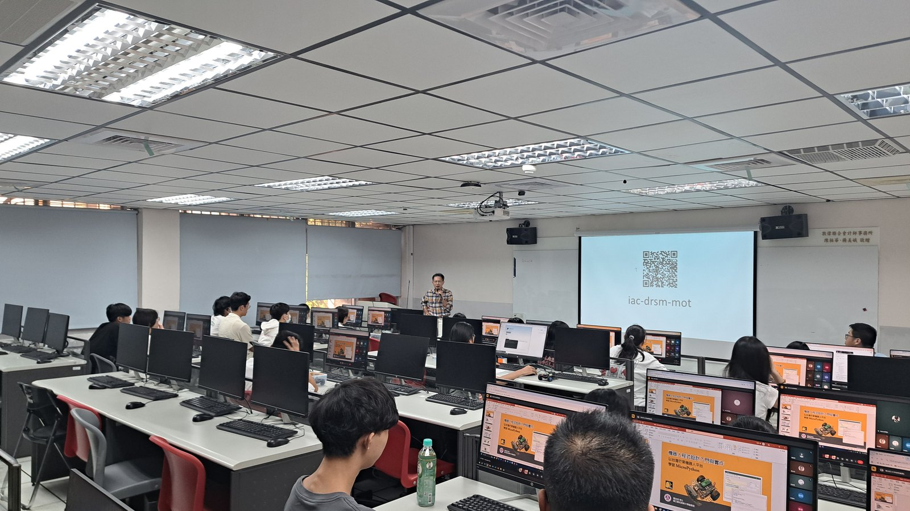

本課操作對象為 Raspberry Pi Pico 小車，學習重點為完成連線與基本動作控制。
Student Practice
本頁是 `1 hr Boot Camp` 主題下的學生練習模組， 用比較好跟做的任務順序，幫學生完成連線、輸入指令與五個基本動作。
本課操作對象為 Raspberry Pi Pico 小車，學習重點為完成連線與基本動作控制。
Mission Board
學生練習模組和 Boot Camp 是同一個主題，只是把操作順序拆得更清楚，方便學生自己跟上。
先把 Raspberry Pi Pico 小車接上電腦，確認 Thonny 看得到它。
先看 Thonny 步驟先認識 `W / A / S / D / X`，知道每一個按鍵要讓車子做什麼。
看按鍵動作先跟著老師操作，不用一次把全部程式背起來，只要會前進、轉向、停止就成功了。
直接看程式Mission Route
先把電腦和車子接好，確認老師示範時車子真的會動。
認識 5 個按鍵：`W / A / S / D / X`，知道它們分別代表什麼動作。
下載第一份程式，先跟著老師按鍵盤控制，不用急著自己寫全部。
完成前進、後退、左轉、右轉、停止五個動作，就完成今天任務。
Real Study Scene
本區呈現實際學習畫面，協助學生理解課堂中的操作方式與環境。

課堂操作需同時觀察程式畫面與小車反應，因此熟悉 `Run`、`Shell` 與按鍵指令十分重要。

本堂課以連線、輸入指令與小車動作控制為主要任務，不要求一次掌握所有進階內容。
Action Map
Mini Code
小車移動(Car Motion)
def forward(speed=30):
...
def backward(speed=30):
...
def turn_left(speed=30):
...
def turn_right(speed=30):
...鍵盤控制(Keyboard Control)
cmd = input("Command: ").strip().lower()
if cmd == "w":
forward()
elif cmd == "s":
backward()
elif cmd == "a":
turn_left()
elif cmd == "d":
turn_right()
else:
stop()Troubleshooting
第一堂課最常卡在連線、執行和輸入的位置。先查這幾個地方，很多問題都能立刻解決。
先確認 USB 線有插好，再請老師一起看 `MicroPython (Raspberry Pi Pico)` 有沒有選對。
確認已開啟 `keyboard-car-control.py`，再按一次綠色 `Run`。
請把游標點到 Thonny 下方 `Shell`，再輸入 `w` 或 `x` 後按 Enter。
先輸入 `x`，如果還是沒有停，立刻請老師協助並先斷開電源。
Next Step
What Comes Next
完成連線與鍵盤控制後，課程可進一步延伸至循跡、感測器與其他控制模組。
影片示範循跡活動的延伸樣貌，供後續學習參考。

循跡小車常以紅外線感測器辨識黑線，後續課程將說明其在方向判斷中的作用。

控制板與模組屬於後續單元的重要內容，完成基本控制後再逐步加入較易掌握。